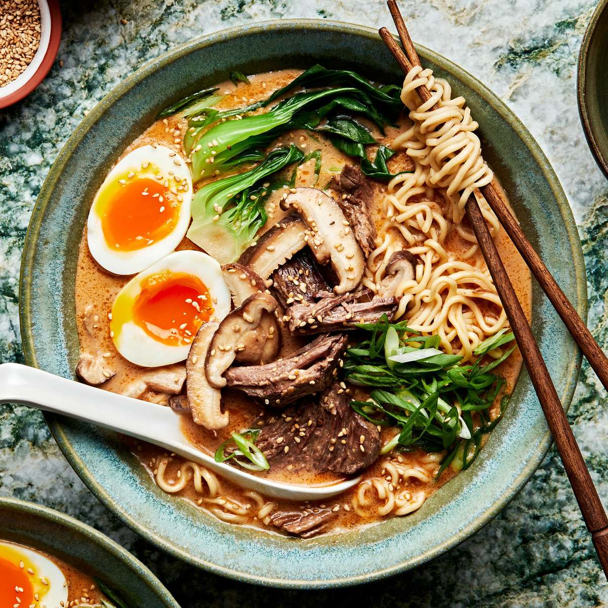

Ingredients
- Noodles
- Chicken Broth
- Soft-Boiled Eggs
- Soy Sauce
- Green Onions
- Seaweed (Nori)
- Chicken or Pork (optional)
Instructions
- Cook the noodles according to the package instructions and set aside.
- In a pot, heat the chicken broth and add soy sauce to taste.
- Prepare soft-boiled eggs by boiling them for 6 minutes, then cooling in ice water.
- Assemble the ramen by placing the noodles in a bowl, pouring the hot broth over them, and topping with sliced green onions, seaweed, and soft-boiled eggs.
- Add chicken or pork if desired.
- Serve hot and enjoy!
Country of Origin
Click the map to explore Japan on Google Maps.
Click the map to find restaurants serving Ramen in Japan on Google Maps.